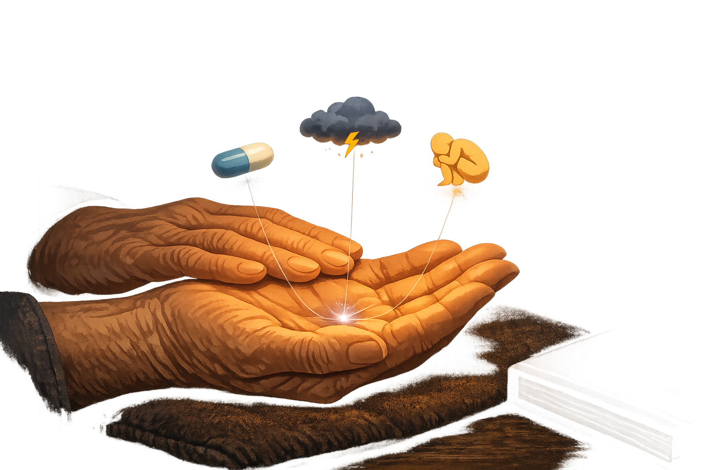

By Rustam Iuldashov
30 years lived experience with chronic migraine | Sources: 16 peer-reviewed references including Lancet Neurology, J Headache Pain, JAMA Internal Medicine, Neurology Clinical Practice, PLOS ONE, Cephalalgia | Last updated: March 2026
Medical Review: This content is based on 16 peer-reviewed sources including Lancet Neurology, J Headache Pain, JAMA Internal Medicine, Neurology Clinical Practice, PLOS ONE, J Pain, and other authoritative journals.
Important Notice: This article is for informational purposes only and does not replace professional medical advice. Always consult a healthcare professional before starting or changing any treatment.
Key Takeaways
- Migraine burden in adults over 60 is approximately 16.4% — nearly as high as in young adults — yet this population is systematically under-studied and undertreated[1]
- After 60, migraine often shifts to bilateral, duller pain; aura may increase in frequency; headache-free aura (“silent migraine”) becomes more common[2]
- Aura without headache appearing for the first time after age 50 must be evaluated by a neurologist or cardiologist to rule out transient ischemic attack before a migraine diagnosis is assumed
- Giant cell arteritis mimics migraine closely, occurs almost exclusively after age 50, and can cause permanent vision loss if diagnosed late — average diagnostic delay exceeds nine weeks[4][5][16]
- Triptans are labeled contraindicated or not recommended past 65 in patients with cardiovascular disease; individual cardiovascular reassessment is mandatory, not optional[6][7]
- Anti-CGRP monoclonal antibodies show equivalent efficacy and tolerability in patients over 65 as in younger adults, with no vascular liability — now recommended as first-line by AHS 2024[9][10]
- ACT and CBT have strong evidence for reducing migraine disability and pain catastrophizing in older adults — older patients may respond especially well to acceptance-based approaches[11][12][13]
The Lie You Were Told
Someone told you it would end.
Maybe it was a neurologist, tired at the end of a long clinic day. Maybe it was a friend who’d gotten lucky. Maybe it was the internet, optimistic and half-wrong. The message was consistent: hang on. Get through menopause. Age out of this. The migraines will fade.
For many people, they do. But for a number that medicine rarely acknowledges, something different happens. The migraines don’t disappear after 60. They transform — quieter in some ways, stranger in others, and newly complicated by a body that no longer responds to treatment the way it once did.
I’ve lived with migraine for 30 years. I’ve watched this myth comfort people and mislead them in equal measure. The truth is harder and more useful.
A 2022 systematic review found that elderly adults carry a migraine burden of 16.4% — nearly as high as the 17.9% documented in 18–44-year-olds.[1] That figure should be everywhere. Instead, it’s almost nowhere. Older migraineurs are underrepresented in clinical trials, undertreated in practice, and regularly told that what they’re experiencing doesn’t quite match the textbooks — because the textbooks weren’t written with them in mind.
That’s the gap this article is here to close.
What Changes — and What Doesn’t
After 60, migraine rarely holds its shape.
The most documented shift is in the character of the pain itself. In younger adults, migraine tends to be unilateral — one-sided, pounding, impossible to ignore. After 60, it often becomes bilateral. Duller. Easier to dismiss as tension headache, aging, or just a bad day.[2] The throbbing softens. Nausea may lessen. What doesn’t necessarily change is how often attacks arrive, or how thoroughly they can derail a day.
Then there’s aura. For some women, it increases after menopause — the visual zigzags and tingling sensations that signal a coming storm become more frequent, not less.[2] For others, aura begins arriving without headache at all. These “silent migraines” are disorienting in a particular way: the visual disturbances appear, the sensory symptoms move through, and then — nothing. No pain. Just the unsettling awareness that your brain did something unusual and you’re not sure what it means.
One critical note: if aura without headache appears for the first time after age 50 — with no prior migraine history — treat it as a transient ischemic attack until a neurologist or cardiologist rules that out. Do not self-diagnose this as “just migraine” without a medical evaluation first.
Estrogen is part of the broader story. It plays a complex modulatory role in migraine throughout a woman’s life; the hormonal instability of perimenopause often intensifies attacks, and the stable low-estrogen state that follows brings genuine relief for many — but not all.[1][2] Vascular changes, neuronal aging, and cumulative sensitization of the trigeminal pain system all contribute to a clinical picture that a landmark 2022 Lancet Neurology review described as “not well characterised.”[2]
What is well characterised is the consequence: more comorbidities, more medications in the daily routine, and therefore more complexity in treating the migraine itself.
When the Headache Is Something Else
This is where migraine after 60 becomes genuinely dangerous — not because the attacks themselves are more severe, but because something else may be wearing their mask.
Giant cell arteritis is the diagnosis that cannot be missed. It’s an inflammatory disease of medium and large arteries — most commonly the temporal artery running along the side of the skull — and it presents with headache in 70 to 90 percent of cases.[5] The pain is often throbbing. Often temporal. Close enough to migraine that one documented case involved a patient who spent a full year being treated for migraine — receiving amitriptyline, propranolol, and flunarizine — before a temporal artery biopsy revealed the actual diagnosis.[4]
That year mattered. Untreated giant cell arteritis can cause permanent vision loss. Its mortality from stroke and myocardial infarction sits at approximately 1–3%.[5] The diagnostic delay averages over nine weeks — time in which irreversible damage accumulates.[16]
The distinguishing features are specific: scalp tenderness, pain when combing your hair, jaw pain while chewing or speaking, visual disturbances, and systemic symptoms — fever, unexplained weight loss, profound fatigue, shoulder and hip stiffness. Elevated ESR and CRP are the key laboratory signals. Temporal artery biopsy or imaging confirms the diagnosis.
The second impostor is stroke. Migraine with aura is an established independent risk factor for ischemic stroke — and after 60, when vascular risk is already accumulating, the overlap between stroke symptoms and aura symptoms becomes clinically treacherous.[1] Sudden and severe headache, the worst of your life; aura that lasts longer than 60 minutes; weakness or speech difficulty that doesn’t resolve — these are emergencies, not migraine abortives.
Is This Migraine — or Something More Dangerous?
When you’re in pain and frightened, you don’t read paragraphs. You scan. Use this table as a quick reference — and as a reason to call your doctor.
| Symptom | ✅ Likely Migraine | ⚠️ Needs Immediate Evaluation |
|---|---|---|
| Pain character | Familiar — similar to past attacks | Completely new pain, “worst of my life” |
| Onset | Gradual, building over minutes | Sudden — maximal intensity within seconds (“thunderclap”) |
| Aura duration | Lasts 20–60 minutes, then resolves | Persists beyond 60 minutes without clearing |
| Weakness / speech | Mild, familiar from previous auras | Real weakness in arm, leg, or face; slurred speech |
| Vision | Flickering, zigzags — the usual pattern | Sudden vision loss in one eye |
| Accompanying | Nausea, light sensitivity — same as always | Fever, scalp tenderness, jaw pain when eating |
| First after 50 | No — longstanding migraine history | Yes — any new headache type after 50 requires ruling out secondary causes |
This table is a quick reference guide, not a diagnostic tool. Always consult a physician for evaluation.
⚠️ When to Act — and How Fast
Call emergency services immediately if you have:
- A sudden, “thunderclap” headache — the worst of your life
- Weakness or numbness in your arm, leg, or face
- Slurred speech or difficulty understanding words
- Sudden vision loss in one or both eyes
- Aura symptoms that last more than 60 minutes without resolving
See your doctor within 24–48 hours if you have:
- A new type of headache unlike anything before
- Scalp tenderness when touched or combed
- Jaw pain while chewing or speaking
- Aura without headache occurring for the first time after age 50
- Headache accompanied by fever, unexplained weight loss, or severe fatigue
Don’t wait for the next scheduled appointment. Here, time is tissue.
The Medication Problem Nobody Explains Clearly
Let’s be honest about something most conversations avoid: many of the drugs that managed your migraine for decades may no longer be appropriate after 60.
Triptans — sumatriptan, rizatriptan, eletriptan — are labeled as contraindicated or not recommended past 65, and specifically in anyone with cardiovascular disease, cerebrovascular disease, uncontrolled hypertension, or peripheral artery disease.[6] The mechanism is the problem: triptans work by constricting blood vessels, and in a younger, vascularly healthy person this is manageable. In someone whose arteries have accumulated decades of wear, that same constriction can tip the balance.
A large French pharmacoepidemiological study of triptan users aged 65 and older — drawing from a national health insurance database — found that the absolute risk of hospitalization from vascular events remained low, but consistently highlighted the need for rigorous individual cardiovascular evaluation before continuing these medications past that threshold.[6] A separate Austrian nationwide study found that 43.6% of older triptan users already carried a vascular diagnosis or were on vascular medications — yet were still receiving triptan prescriptions.[7]
“Older age alone is not a reason to stop triptans. But ongoing reassessment is not optional.”
— Zebenholzer et al., Headache, 2022 [7]NSAIDs — ibuprofen, naproxen — face their own calculus. Gastrointestinal bleeding risk climbs with age. Kidney function declines. The long list of medications many older adults take for cardiovascular and metabolic conditions multiplies interaction risk. Acetaminophen is the safest acute option after 60, with the honest caveat that it’s a weaker weapon against moderate-to-severe attacks.[8]
The safe medication window narrows precisely when the need for effective treatment remains unchanged. That tension is real — and it’s why the next development matters enormously.
The New Hope: CGRP Antibodies After 65
Here, the news is unambiguously good.
Anti-CGRP monoclonal antibodies — erenumab, fremanezumab, galcanezumab, eptinezumab — are the first migraine-specific preventive medications in history. They block calcitonin gene-related peptide, the neuropeptide at the center of migraine’s pain cascade. They carry none of the vasoconstriction that makes triptans problematic in older adults. They don’t sedate. They don’t interact with antihypertensives, anticoagulants, or statins in the ways that older preventives do.
A 2025 real-world study from the Cleveland Clinic — among the first specifically examining patients 65 and older — found no statistically significant difference in efficacy or tolerability between the over-65 and under-65 groups across erenumab, fremanezumab, and galcanezumab, in both episodic and daily migraine.[9] Age alone, the researchers concluded, should not disqualify a patient from these treatments.
A comprehensive 2025 review confirmed sustained long-term safety and efficacy across all four antibodies, with tolerability that consistently outperforms older non-specific preventives like valproate or amitriptyline.[10] In 2024, the American Headache Society updated its consensus to recommend CGRP antibodies as first-line options for patients with at least moderate disability — a meaningful shift from the previous “after failing two other treatments” requirement that had delayed access for years.[10]
For the older migraineur who has exhausted the safer options from the traditional pharmacopoeia, this is not a small development.
What Medicine Still Forgets
There’s a dimension to migraine at 60 that rarely appears in clinical guidelines. It doesn’t have a billing code. But it shapes outcomes more than almost any pharmacological variable.
You have been living with this condition for years — possibly decades. You’ve built coping structures around it. Negotiated your relationships inside it. Shaped your career, your social life, your self-concept in its long shadow. After 60, those structures often shift at the same time the migraine shifts. Retirement disrupts routine — and routine is one of migraine management’s most reliable tools. Children leave. Social networks contract. Sleep architecture changes. Grief enters. Each of these is a potential trigger, and each intersects with how pain is experienced and how much suffering surrounds it.
This is where psychology makes its case.
Acceptance and Commitment Therapy (ACT), developed by Dr. Steven Hayes at the University of Nevada, has accumulated one of the most robust evidence bases in chronic pain psychology. Its core insight is counterintuitive: instead of fighting pain — controlling it, eliminating it, defining yourself by your struggle against it — the goal is to reduce the suffering that surrounds the pain. To disentangle who you are from what visits you. Dr. Russ Harris, one of ACT’s foremost clinical communicators, frames this as building psychological flexibility: the capacity to move toward what matters to you, even while pain is present.
The data support this framing. A 2024 meta-analysis of 21 RCTs found that ACT produced significant improvement in pain interference, functional impairment, pain acceptance, and depression in chronic pain patients.[12] A systematic review specifically examining older adults found that they were less likely to drop out of ACT than younger patients — a finding researchers attributed to older adults’ deeper familiarity with acceptance as a life skill.[11]

Cognitive Behavioral Therapy (CBT) adds a different but complementary dimension: identifying and restructuring the thought patterns that amplify pain’s impact. A 2025 systematic review and meta-analysis of 50 trials found that CBT, relaxation training, and mindfulness-based interventions each reduced headache frequency in adults with migraine — with mindfulness specifically outperforming education alone for migraine disability.[14] A meta-analysis focused on older adults with chronic pain found statistically significant reductions in both pain intensity and catastrophizing from CBT-based interventions, with group-delivered formats showing the largest effects.[13]
The practical conclusion is unambiguous: if you are managing migraine at 60 purely with medication, you are using only part of the available toolkit.
A Practical Map Forward
Managing migraine after 60 means updating the strategy to match where you actually are — not where you were at 35, and not where clinical guidelines assume you are.
Five Things to Do Now
- Reassess your medications with a cardiovascular lens. Whether you’re continuing triptans, considering CGRP antibodies, or reaching for an NSAID, a current evaluation of blood pressure, cholesterol, and cardiac history is the foundation of any safe prescription decision. This conversation is worth initiating — your doctor may not.
- Know the red flags of giant cell arteritis. New scalp tenderness, jaw pain when eating, unexplained visual changes, a headache that feels different from any you’ve had before — these don’t wait for the next scheduled appointment.
- Ask about CGRP antibodies directly. If your neurologist hasn’t raised them, you raise them. Real-world data supports equivalent efficacy in people over 65, without the vascular liability of older treatments.[9]
- Add psychological support to the plan. A therapist or psychologist experienced in chronic pain — ideally trained in ACT or CBT — is not an alternative to medical treatment. It’s part of what comprehensive treatment looks like. Group formats show particular promise for older adults.[13]
- Track your current triggers, not your old ones. Sleep architecture changes with age. Dehydration risk increases. Meal timing matters differently. The patterns that defined your migraine at 40 may have shifted. Track before concluding.
Questions to Ask Your Doctor
Many patients — especially those raised in a culture where “the doctor knows best” — don’t realize they can and should initiate this conversation themselves. Here are three specific phrases to bring to your next appointment:
“Given my cardiovascular health, are triptans still appropriate for me — or should we discuss CGRP therapy?”
“I’ve been having aura without headache. Should we rule out a TIA before calling this migraine?”
“I’d like to try behavioral therapy alongside my medication. Can you refer me to a chronic pain specialist?”
Key Takeaways
- Migraine burden in adults over 60 is approximately 16.4% — nearly as high as in young adults — yet this population is systematically under-studied and undertreated[1]
- After 60, migraine often changes character: bilateral pain, reduced nausea, increased or headache-free aura. The condition transforms; it rarely simply ends[2]
- Aura without headache appearing for the first time after age 50 must be evaluated by a neurologist or cardiologist to rule out TIA before a migraine diagnosis is assumed
- Giant cell arteritis mimics migraine closely, occurs almost exclusively after age 50, and can cause permanent vision loss if diagnosed late — average delay exceeds nine weeks[16]. New or changed headache in this age group requires prompt evaluation[4][5]
- Triptans and NSAIDs require careful individual risk assessment after 60; cardiovascular status must guide every treatment decision[6][7][8]
- Anti-CGRP monoclonal antibodies show equivalent efficacy and tolerability in patients over 65 as in younger adults — now first-line by AHS 2024[9][10]
- ACT and CBT have strong evidence for reducing migraine-related disability in older adults — and older patients may be especially well-suited to acceptance-based approaches[11][12][13][14]
⚕️ Important Medical Disclaimer
This article is for informational and educational purposes only and does not constitute medical advice, diagnosis, or treatment. The author, Rustam Iuldashov, is not a licensed physician, neurologist, or healthcare professional. He is a patient advocate with 30 years of personal experience living with chronic migraine.
All clinical claims in this article are sourced from peer-reviewed research published in indexed medical journals. Study designs and sample sizes are noted where applicable.
Decisions about triptans, CGRP-targeting medications, NSAIDs, and acetaminophen all carry individualized risks and benefits that depend on your specific cardiovascular history, kidney function, medication list, and comorbidities. Always consult a qualified healthcare provider — ideally one with expertise in both headache medicine and internal medicine — for questions about your individual treatment plan.
Giant cell arteritis, transient ischemic attack, and stroke are serious medical conditions that require urgent in-person evaluation, laboratory testing, and imaging. This article cannot diagnose these conditions. If you are experiencing new or severe headache symptoms, seek immediate medical attention.
This content was last reviewed for accuracy in March 2026.
References
- Riggins N, Ehrlich A. “Episodic Migraine and Older Adults.” Curr Pain Headache Rep, 26:331–335 (2022). doi:10.1007/s11916-022-01029-7. Study design: Narrative review.
- Scheffler A, Krause T, Schankin C, Goadsby PJ, et al. “Migraine in older adults.” Lancet Neurol, 21(10):911–921 (2022). doi:10.1016/S1474-4422(22)00297-8. Study design: Systematic review.
- Jiang W, Liang GH, Li JA, Yu P, Dong M. “Migraine and the risk of dementia: a meta-analysis and systematic review.” Aging Clin Exp Res, 34(6):1237–1246 (2022). doi:10.1007/s40520-021-02065-w. Study design: Meta-analysis. n=291,549.
- Devi S, Dash A, Purkait S, Sahoo B. “Giant Cell Arteritis Masquerading As Migraine: A Case Report.” Cureus, 15(8):e44107 (2023). doi:10.7759/cureus.44107. Study design: Case report.
- Ameer MA, Vaqar S, Khazaeni B. “Giant Cell Arteritis (Temporal Arteritis).” StatPearls [Internet]. Updated May 2024. Study design: Clinical review (NCBI Bookshelf).
- Tran PT, Lapeyre-Mestre M, Berangere B, Lanteri-Minet M, et al. “Triptan use in elderly over 65 years and the risk of hospitalization for serious vascular events.” J Headache Pain, 25(1):68 (2024). doi:10.1186/s10194-024-01770-x. Study design: Propensity score-matched cohort.
- Zebenholzer K, Gall W, Gleiss A, Pavelic AR, Wober C. “Triptans and vascular comorbidity in persons over fifty: Findings from a nationwide insurance database.” Headache (2022). doi:10.1111/head.14304. Study design: Retrospective cohort. n=13,833.
- Martignoni E, Terzaghi M, Petraglia F, Nappi G. “Practical considerations for the treatment of elderly patients with migraine.” Eur J Neurol, 12(s5):47–51 (2005). doi:10.1111/j.1468-1331.2005.01117.x. Study design: Narrative review.
- Salim A, Biswas S, Sonneborn C, Hogue O, Hennessy E, Mays M, Suneja A, Ahmed Z, Mata IF. “Efficacy and Tolerability of Anti-CGRP Monoclonal Antibodies in Patients Aged ≥65 Years With Daily or Nondaily Migraine.” Neurol Clin Pract, 15(1):e200373 (2025). doi:10.1212/CPJ.0000000000200373. Study design: Retrospective observational.
- Nicol AL, Burkett J. “An Update on CGRP Monoclonal Antibodies for the Preventive Treatment of Episodic Migraine.” Curr Pain Headache Rep (2025). doi:10.1007/s11916-025-01365-4. Study design: Narrative review.
- Martinez-Calderon J, García-Muñoz C, Rufo-Barbero C, Matias-Soto J, Cano-García FJ. “Acceptance and Commitment Therapy for Chronic Pain: An Overview of Systematic Reviews with Meta-Analysis of Randomized Clinical Trials.” J Pain, 25(3):595–617 (2024). doi:10.1016/j.jpain.2023.09.013. Study design: Overview of systematic reviews. n=84 meta-analyses.
- Chen L, Zhang J, Ding Y, et al. “Acceptance and Commitment Therapy for patients with chronic pain: A systematic review and meta-analysis on psychological outcomes and quality of life.” PLOS ONE (2024). doi:10.1371/journal.pone.0301226. Study design: Systematic review and meta-analysis. n=21 RCTs.
- Lunde CE, Sieberg CB. “Association Between Psychological Interventions and Chronic Pain Outcomes in Older Adults: A Systematic Review and Meta-analysis.” JAMA Intern Med (2018). doi:10.1001/jamainternmed.2018.2751. Study design: Systematic review and meta-analysis. n=2,608.
- Minen MT, Szperka C, Bergmann L, et al. “Behavioral interventions for migraine prevention: A systematic review and meta-analysis.” Cephalalgia (2025). doi:10.1177/03331024251316069. Study design: Systematic review and meta-analysis. n=6,024.
- Vincenten SCC, Mulleners WM. “The quest for a headache pattern in giant cell arteritis: A cohort study.” Cephalalgia Reports, 4 (2021). doi:10.1177/25158163211024134. Study design: Cross-sectional cohort. n=30.
- Prior JA, Ranjbar H, Belcher J, Mackie SL, Helliwell T, Liddle J, Mallen CD. “Diagnostic delay for giant cell arteritis — a systematic review and meta-analysis.” BMC Medicine (2017). doi:10.1186/s12916-017-0787-7. Study design: Systematic review and meta-analysis. Pooled mean delay: 9.0 weeks (95% CI 6.5–11.4).

How We Create Content
- Peer-reviewed sources only. We cite research from Lancet Neurology, J Headache Pain, JAMA Internal Medicine, Neurology Clinical Practice, Curr Pain Headache Rep, PLOS ONE, Cephalalgia, and other authoritative journals.
- Large-sample evidence prioritized. Key claims reference nationwide insurance cohorts (n=13,833), dementia meta-analysis (n=291,549), and systematic reviews covering thousands of participants.
- Source transparency. All 16 references are numbered and verifiable. DOI links provided where available.
- Regular updates. We review articles when significant new research emerges. Next scheduled review: September 2026.
- No conflicts of interest. We receive no funding from pharmaceutical companies, triptan manufacturers, CGRP antibody producers, or any other commercial entity.
Track What Your Body Is Telling You After 60
Migraine Companion helps you build the diary neurologists recommend — tracking pain character, aura patterns, medications, and triggers — so patterns emerge that single entries never reveal. Built by someone with 30 years of migraine experience.
Last reviewed: March 2026
Next scheduled review: September 2026